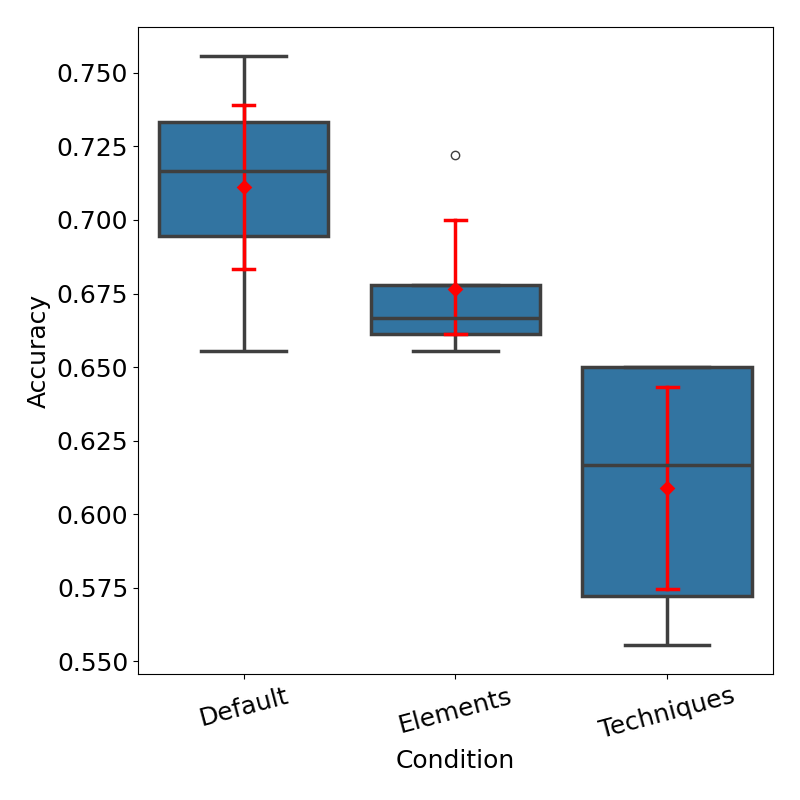
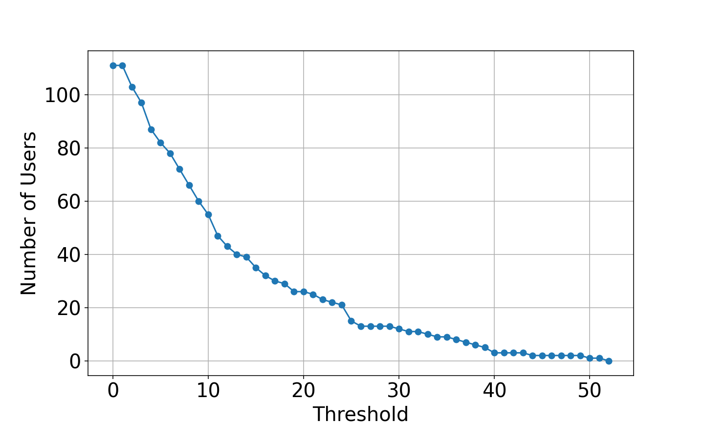

Assessing the Aesthetic Evaluation Capabilities of GPT-4 with Vision: Insights from Group and Individual Assessments
Recently, it has been recognized that large language models demonstrate high performance on various intellectual tasks. However, few studies have investigated alignment with humans in behaviors that involve sensibility, such as aesthetic evaluation. This study investigates the performance of GPT-4 with Vision, a state-of-the-art language model that can handle image input, on the task of aesthetic evaluation of images. We employ two tasks, prediction of the average evaluation values of a group and an individual’s evaluation values. We investigate the performance of GPT-4 with Vision by exploring prompts and analyzing prediction behaviors. Experimental results reveal GPT-4 with Vision’s superior performance in predicting aesthetic evaluations and the nature of different responses to beauty and ugliness. Finally, we discuss developing an AI system for aesthetic evaluation based on scientific knowledge of the human perception of beauty, employing agent technologies that integrate traditional deep learning models with large language models.
| The University of Tokyo |
In recent years, Large Language Models (LLMs) have been shown to be effective for a number of tasks, such as Q&A tasks and logical reasoning tasks. While these types of intellectual problem-solving abilities have been widely investigated, there have not been many investigations on performance for tasks requiring sensibility [Ye 24, OpenAI 23]. In this paper, we investigate how closely state-of-the-art LLMs align with humans in one of the sensibility behaviors, aesthetic evaluation.
近年来，大语言模型（LLM）已被证明在问答任务、逻辑推理任务等多种任务上效果显著。尽管这类智力解题能力已被广泛研究，针对需要感受力的任务的性能考察却并不多见 [Ye 24, OpenAI 23]。本文考察当前最先进的 LLM 在其中一种感受性行为——审美评价——上与人类的契合程度。
Humans perform aesthetic evaluations on information accross various modalities. In addition to aesthetic evaluation of textual information (e.g. stories and poems), which can be handled by LLMs, humans also perceive beauty in images, music, and moral behaviors. In this paper, we focus on the beauty of images, a modality where substantial knowledge about aesthetic evaluations has been established.
人类会对跨模态的信息做出审美评价。除可被 LLM 处理的文本信息（如故事与诗歌）的审美评价之外，人类也能在图像、音乐与道德行为中感知美。本文聚焦图像之美，这一模态上已经积累了关于审美评价的大量知识。
Recently, GPT-4, one of the most powerful LLMs, has begun to support image input [OpenAI 23, Yang 23]. Among various types of Vision Language Models that can handle images and text, in this paper, we adopt GPT-4 with vision (GPT-4V) as the language model under investigation.
近来，最强的 LLM 之一 GPT-4 已开始支持图像输入 [OpenAI 23, Yang 23]。在各类能够处理图像与文本的视觉语言模型中，本文采用 GPT-4 with vision（GPT-4V）作为考察对象。
The purpose of this paper is to investigate the aesthetic evaluation performance of GPT-4V. A comparison of prompt engineering methods and an analysis of the behavior of predictions are also conducted. The experimental results reveal the nature of the current LLM’s aesthetic evaluation performance and behavior, and provide insight for improvement. In the last of this paper, we discuss the direction of future developments: we should take scientific knowledge of beauty into account and build an aesthetic evaluation model using agent technology that integrates traditional deep learning models and LLMs.
本文旨在考察 GPT-4V 的审美评价性能，并对提示工程方法做比较、对预测行为做分析。实验结果揭示了当前 LLM 审美评价性能与行为的性质，并为改进提供了启示。在本文最后，我们讨论未来的发展方向：应当把关于美的科学知识纳入考量，并使用整合传统深度学习模型与 LLM 的智能体技术来构建审美评价模型。
There has been a lot of research on approximating the aesthetic evaluation of images using AI technologies [Deng 17]. Initially, image features were desined directly by humans [Ke 06], or by machine learning models using generic image features such as the Fisher vector [Marchesotti 11].
已有大量研究尝试用 AI 技术逼近图像的审美评价 [Deng 17]。最初，图像特征由人工直接设计 [Ke 06]，或由使用 Fisher 向量 [Marchesotti 11] 等通用图像特征的机器学习模型给出。
In the past decade or so, deep learning technology has advanced, and research has emerged on approximating the aesthetic evaluation of images using neural networks in a black box manner. For example, studies have been reported that use convolutional neural networks to acquire image features through learning [Kao 15, Talebi 18]. These studies have been contributed to by the fact that large-scale aesthetic evaluation datasets (e.g. AVA [Murray 12]) were constructed using platform sites on the Internet. These large datasets are beneficial for deep learning, which requires a large amount of training data. Most of the above studies set the mean value of the people’s aesthetic evaluation as the ground truth for regression or classification. This is called the Generic Image Aesthetics Assessment (GIAA) [Li 20].
近十余年来，深度学习技术不断进步，出现了以黑箱方式用神经网络逼近图像审美评价的研究。例如，已有研究使用卷积神经网络通过学习获取图像特征 [Kao 15, Talebi 18]。这些研究的推进也得益于 AVA [Murray 12] 等大规模审美评价数据集借助互联网平台型站点得以构建。这些大规模数据集对需要大量训练数据的深度学习颇有裨益。上述研究大多把人们审美评价的均值设为回归或分类的真值，这被称为通用图像美学评价（GIAA）[Li 20]。
On the other hand, there has been recent progress in adressing the task of approximating the aesthetic evaluation of a particular individual, which is called the Personalized Image Aesthetics Assessment (PIAA) [Li 20]. Several methods have been proposed for constructing PIAA models using deep learning: a method where a model that takes an image as an input, receives the individual’s attributes as conditioning, and outputs the individual’s aesthetic evaluation [Yang 22]. Another method is to firstly train a GIAA model using a dataset of people’s aesthetic evaluations and then convert into a PIAA model by fine-tuning with personal data [Yang 22]. Another method is to use the GIAA model as a sub-module, make a sub-module that predicts the difference between the output values of the GIAA model and the individual aesthetic evaluations, and build a PIAA model by adding these two sub-modules [Ren 17].
另一方面，逼近特定个体审美评价的任务——即个性化图像美学评价（PIAA）[Li 20]——近来也取得进展。已有若干用深度学习构建 PIAA 模型的方法：一种方法让模型以图像为输入、以个体属性为条件，输出该个体的审美评价 [Yang 22]；另一种方法先用人们审美评价的数据集训练一个 GIAA 模型，再用个人数据微调，转换为 PIAA 模型 [Yang 22]；还有一种方法把 GIAA 模型作为子模块，另建一个预测 GIAA 模型输出值与个体审美评价之间差异的子模块，并把两个子模块相加构建 PIAA 模型 [Ren 17]。
However, the problem with these methods is that the use of the average value of the aesthetic evaluation of the masses neutralizes the differences in individual processes of perception of beauty [Zhu 22]. In the PIAA task, there are the problem of such individual differences in aesthetic evaluation [Ren 17] and the problem of the small amount of data for each individual person. These problems are currently hindering the construction of PIAA models because they are incompatible with deep learning, which requires a large amount of data and consistent labeling.
然而这些方法的问题在于，使用大众审美评价的平均值会抵消个体在美感感知过程上的差异 [Zhu 22]。在 PIAA 任务中，既存在审美评价个体差异的问题 [Ren 17]，也存在每个人数据量偏少的问题。由于这些问题与需要大量数据、标注一致的深度学习不相容，目前正在阻碍 PIAA 模型的构建。
One possible solution to such problems might be to use LLMs. This is because the perception of beauty is said to be strongly influenced not only by the objective features of the input stimuli, but also by the prior and background knowledge that a person has acquired through past experiences [Chatterjee 16, Reber 04]. LLMs have extensive knowledge acquired from vast amount of text data, which may be transferable to aesthetic evaluation. Therefore, as a first step, this study aims to investigate the current LLM’s performance for aesthetic evaluation.
解决这类问题的一个可能途径是使用 LLM。这是因为，美的感知据称不仅受输入刺激的客观特征强烈影响，也受一个人通过过往经验习得的先验知识与背景知识的强烈影响 [Chatterjee 16, Reber 04]。LLM 拥有从海量文本数据中获取的广博知识，这些知识可能迁移到审美评价上。因此，作为第一步，本研究旨在考察当前 LLM 在审美评价上的性能。
Using the OpenAI API of GPT-4V, we investigate how well a LLM performs on aesthetic evaluation of images.
我们使用 GPT-4V 的 OpenAI API，考察 LLM 在图像审美评价上的表现。
Two tasks, GIAA and PIAA, are employed. GIAA is a task in which GPT-4V predicts the average aesthetic evaluation of an image given by a group of users, as a three-class classification problem. PIAA is a task in which GPT-4V understands the tendncy of a user’s aesthetic evaluation using few-shot prompting, and predicts the user’s aesthetic evaluation for a newly presented image based on the understanding. This is also a three-class classification problem.
本研究采用 GIAA 与 PIAA 两项任务。GIAA 要求 GPT-4V 预测一组用户对某张图像给出的平均审美评价，是一个三分类问题。PIAA 要求 GPT-4V 借助少样本提示理解某位用户的审美评价倾向，并基于该理解预测该用户对新呈现图像的审美评价，同样是一个三分类问题。
PARA [Yang 22] exists as a dataset of aesthetic evaluation of images that can be used for both GIAA and PIAA. PARA stores aesthetic evaluations by 438 raters for a total of 31220 images.
PARA [Yang 22] 是一个可同时用于 GIAA 与 PIAA 的图像审美评价数据集，存储了 438 名评分者对共计 31220 张图像的审美评价。
In both cases of GIAA and PIAA, basically, the performance indicator is the percentage of correct answers in the three-class classification problem (accuracy). This indicator is appropriate because the number of samples in each class (low/middle/high) is the same in our experiments. In some cases, we also report the precision, recall, and f1-score for each class as additional performance measures.
在 GIAA 与 PIAA 两种情形下，性能指标基本上都是三分类问题的正确率（accuracy）。由于本实验中各类别（低/中/高）的样本数相同，该指标是合适的。在某些情况下，我们也报告各类别的精确率、召回率与 F1 分数作为补充性能指标。
PARA dataset contains images of 10 semantic patterns: portrait, animal, scene, building, still life, night scene, food, indoor, plant, and others. In this experiment, we use six of them (portrait, animal, scene, night scene, food, and plant), which we call ”target-semantics”.
PARA 数据集包含 10 种语义模式的图像：肖像、动物、风景、建筑、静物、夜景、食物、室内、植物与其他。本实验使用其中六种（肖像、动物、风景、夜景、食物与植物），称之为“目标语义类别”。
PARA dataset stores the average aesthetic score (1-5 floating point number) of the aesthetic evaluation by multiple raters for each image. In this experiment, this value is divided into the following three intervals and used as the correct label for the aesthetic evaluation. The values greater than 1.0 and up to 2.5 are defined as ”low”, greater than 2.5 and up to 3.5 are defined as ”middle”, and greater than 3.5 and up to 5.0 are defined as ”high”.
PARA 数据集存储了多名评分者对每张图像审美评价的平均分（1–5 的浮点数）。本实验把该值划分为以下三个区间，作为审美评价的正确标签：大于 1.0 且不超过 2.5 定义为“低”，大于 2.5 且不超过 3.5 定义为“中”，大于 3.5 且不超过 5.0 定义为“高”。
Considering the number of patterns to be explored and the GPT-4V’s API usage fee, it is not efficient to obtain GPT-4V’s aesthetic evaluation for all images in the PARA dataset, so a subset of the entire dataset is used in this experiment. Among the images belonging to the 6 patterns of target-semantics, images are extracted from each of the aesthetic evaluation labels (low/middle/high). The resulting image are used as the subset for validation to measure the aesthetic evaluation performance of GPT-4V. This is done for 5 random seeds to account for variation.
考虑到需要探索的模式数量与 GPT-4V 的 API 使用费用，对 PARA 数据集中的全部图像都获取 GPT-4V 的审美评价并不高效，因此本实验使用整个数据集的一个子集。在属于 6 种目标语义类别的图像中，从每个审美评价标签（低/中/高）各抽取 张图像。由此得到的 张图像作为验证子集，用于衡量 GPT-4V 的审美评价性能。为考虑变异，该过程用 5 个随机种子重复。
The prompt for GPT-4V is designed as follows. First, the following text is input as a system attribute prompt that presents the premise of the interaction.
GPT-4V 的提示设计如下。首先，输入以下文本作为呈现交互前提的系统属性提示。
You will be asked to provide an aesthetic evaluation of the image that will be presented to you. The aesthetic evaluation of the image will be conducted in three levels: 0: low, 1: middle, 2: high. First, the image will be presented, followed by a question. Provide your answer after the question is presented. When answering, output only in JSON format. Refrain from outputting anything other than JSON format.
你将被要求对呈现给你的图像做出审美评价。图像的审美评价分三个等级：0：低，1：中，2：高。首先呈现图像，随后给出问题。请在问题呈现之后作答。作答时只以 JSON 格式输出，不要输出 JSON 格式之外的任何内容。
Next, after inputting a tokenized image to be evaluated, we input the following text as a user attribute prompt for question about aesthetic evaluation. GPT-4V’s output is limited to JSON format, so it can be parsed mechanically. We call the following prompt the prompt to distinguish it from the variations used in Exp. 1-B and 1-C.
接着，在输入经词元化的待评价图像之后，我们输入以下文本作为关于审美评价提问的用户属性提示。GPT-4V 的输出被限定为 JSON 格式，因此可被机械解析。我们把下述提示称为 提示，以区别于实验 1-B 与 1-C 中使用的变体。
Predict the aesthetic evaluation of the image by choosing from three classes (0: low, 1: middle, 2: high) as an integer value (0,1,2), and explain the reason and your confidence level (as a floating-point number ranging from 0 to 1).
Note:
- Answer in English.
- Answer from the perspective of your position.
- Ensure that your output is strictly in JSON format without any additional characters or formatting symbols such as ‘‘‘ before and after the JSON object.
- Strictly adhere to the example format provided below:
{"reason": "~~~", "prediction": 0, "confidence": 0.5}
请从三个类别（0：低，1：中，2：高）中选择一个整数值（0、1、2）来预测图像的审美评价，并说明原因与你的置信度（0 到 1 之间的浮点数）。注意： — 用英文回答。 — 从你所处角色的视角回答。 — 确保输出严格为 JSON 格式，JSON 对象前后不得附加任何字符或格式符号（如 '''）。 — 严格遵循下面给出的示例格式：{"reason": "~~~", "prediction": 0, "confidence": 0.5}
In making the prompts, we employ various methods of prompt engineering that are often used: clear and specific task instruction, output format settings, example responses, task segmentation and so on. In addition, since it is said that GPT-4V currently performs better in English, all the information is written in English.
在构造提示时，我们采用了若干常用的提示工程方法：清晰而具体的任务指令、输出格式设定、示例回复、任务分解等。此外，由于据说 GPT-4V 目前在英文上表现更好，所有信息均以英文撰写。
GPT-4V can receive tokenized images with text data as input. When tokenizing images, two resolution modes, low and high, are available (as of 2024/2). When the resolution mode is low, the image is resized to 512x512 and tokenized. When the resolution mode is high, the image is reduced to within 2048x2048 with a fixed aspect ratio, then resized to 768 on the short side and tokenized. In Exp. 1-A, we examine the difference in the prediction performance of the aesthetic evaluation of an image when the resolution mode is set to low or high.
GPT-4V 可以接收经词元化的图像与文本数据作为输入。图像词元化时有低、高两种分辨率模式可选（截至 2024/2）。低分辨率模式下，图像被缩放到 512×512 后词元化。高分辨率模式下，图像先按固定宽高比缩小到 2048×2048 以内，再将短边缩放到 768 后词元化。在实验 1-A 中，我们考察分辨率模式设为低或高时，图像审美评价预测性能的差异。
The GIAA performance for the two resolution modes low/high is shown in Fig. 1. This graph shows a box-and-whisker plot of the percentage of correct responses (accuracy) for each of the five seed trials. The upper and lower whiskers indicate the range of times the quartile range from the lower and upper quartiles, respectively, and values outside this range are indicated by white circles as outliers. The red diamonds indicate the mean values, and the red upper and lower whiskers indicate the 95% confidence intervals. (The box-and-whisker plot and the red dots are the same for subsequent experiments.) A Welch’s t-test (significance level ) was conducted on the sample group of the mean percentage of correct responses (accuracy) in these two conditions, and the p-value was , indicating that there was no significant difference. Since these results indicate that there is no difference between low and high resolution modes, we decided to use the low resolution mode for all the subsequent experiments.
两种分辨率模式（低/高）下的 GIAA 性能如图 1 所示。该图是五次种子实验中每次正确回答百分比（正确率）的箱线图。上下须分别表示从下四分位数与上四分位数起 倍四分位距的范围，超出该范围的数值以白色圆圈标为离群值。红色菱形表示均值，红色上下须表示 95% 置信区间。（后续实验中的箱线图与红点含义相同。）对这两种条件下正确率均值构成的样本组做 Welch t 检验（显著性水平 ），p 值为 ，表明不存在显著差异。由于这些结果表明低、高分辨率模式之间没有差异，我们决定在后续所有实验中使用低分辨率模式。

图 1：不同分辨率模式下正确率的比较
It is well known that when we ask LLMs to perform some reasoning task, it is better to divide the question into subproblems [Zhou 23] or to make them think in logical steps [Wei 23]. Although it is debatable whether or not logical reasoning is necessary for the image aesthetic evaluation task we are dealing with now, we assume that when a person evaluates an image aesthetically, he/she evaluates the various items first, integrates them, and then makes a final judgment. We create two patterns of prompts that follow this assumption. In the first pattern , GPT-4V is asked to evaluate eight items (composition, shade, color, lightness, darkness, sharpness, depth of field, emotion, and creativity) that can be related to the aesthetic evaluation of an image first, and then answer the final aesthetic evaluation based on these evaluations. In the second pattern , the participants are asked to evaluate the three perspectives known as the basic techniques for taking beautiful pictures [Deng 17] first, and then answer the final aesthetic evaluation based on these evaluations. The three perspectives are: rule of thirds (dividing the image vertically and horizontally into three sections each and placing the subject on the four intersections of the dividing lines to improve balance), low depth of field (showing the subject clearly and blurring the background to make the subject stand out), and opposing colors (combining colors that are opposite to each other on the color wheel to create a strong visual contrast).
众所周知，当我们要求 LLM 执行某种推理任务时，把问题拆分为子问题 [Zhou 23] 或让其按逻辑步骤思考 [Wei 23] 会更好。尽管对我们此刻处理的图像审美评价任务而言是否需要逻辑推理尚有争议，我们假定人在对图像做审美评价时，会先评价各个项目、再将它们整合、最后做出终判。我们据此假设构造了两种提示模式。第一种模式 要求 GPT-4V 先评价与图像审美评价相关的八个项目（构图、明暗、色彩、亮度、暗度、锐度、景深、情绪与创意），再基于这些评价给出最终审美评价。第二种模式 要求先评价被称为拍摄美观照片基本技法的三个视角 [Deng 17]，再基于这些评价给出最终审美评价。这三个视角是：三分法（把图像纵横各三等分，将主体置于分割线的四个交点上以改善平衡）、浅景深（清晰呈现主体并虚化背景以突出主体）与对比色（把色环上互为对立的颜色组合在一起，形成强烈的视觉对比）。
We compared the three prompt patterns , , and . The results are shown in Fig. 2. A Welch’s t-test (significance level ) was conducted on the sample groups of any two conditions taken from the groups of the three conditions, and the results were as follows. (, ) pair had p-value of and (, ) pair had p-value , indicating a significant difference. Although in the (, ) pair, the p-value was , indicating no significant difference, the graph shows that the mean and its 95% confidence interval were higher in the condition. These results indicate that is the best question prompt, so we decided to use prompt in the subsequent experiment.
我们比较了 、 与 三种提示模式，结果如图 2 所示。对从三种条件中各取两种条件构成的样本组做 Welch t 检验（显著性水平 ），结果如下。(, ) 对的 p 值为 ，(, ) 对的 p 值为 ，表明存在显著差异。尽管 (, ) 对的 p 值为 ，表明不存在显著差异，图中显示 条件下的均值及其 95% 置信区间更高。这些结果表明 是最佳的提问提示，因此我们决定在后续实验中使用 提示。
图 2：不同提问情形下正确率的比较（GIAA）
It is know that it is better to specify a persona when having LLMs perform some inference task [Xu 23]. In Exp. 1-A and 1-B, we investigated the GIAA performance of GPT-4V without specifying a persona, but in Exp. 1-C, we investigate the difference depending on the persona specified.
众所周知，让 LLM 执行某种推理任务时指定角色设定会更好 [Xu 23]。在实验 1-A 与 1-B 中，我们考察了未指定角色设定时 GPT-4V 的 GIAA 性能；而在实验 1-C 中，我们考察随所指定角色设定不同而产生的差异。
Persona information is given at the beginning of the system attribute prompt. We use 6 patterns of personas: photographer, artist, critic, ordinary person+ (a person interested in photography and painting), ordinary person- (a person not interested in photography or painting), and none (no persona specification).
角色设定信息在系统属性提示的开头给出。我们使用 6 种角色设定：摄影师、艺术家、评论家、普通人+（对摄影与绘画感兴趣的人）、普通人-（对摄影与绘画不感兴趣的人）与无（不指定角色设定）。
The result of the comparison of these six personas is shown in Fig. 3. A one-way ANOVA (Analysis of Variance) (significance level ) was conducted to test for significant differences among the six conditions for the sample group of the mean accuracy. The result was p-value , indicating no significant difference. However, considering the variation in accuracy seen in Fig. 3, we can see that the case with no persona specification (None) may be relatively the most effective. In this case, the prediction performances other than accuracy for the three aesthetic evaluation classes are shown in Table 1. All of these are averages over seeds, rounded to the third decimal place. For each indicator, maximum value is shown in bold and the minimum value in underline.
这六种角色设定的比较结果如图 3 所示。对正确率均值的样本组做单因素方差分析（ANOVA）（显著性水平 ），检验六种条件之间是否存在显著差异，结果 p 值为 ，表明不存在显著差异。然而，考虑到图 3 中正确率的变异，可以看出未指定角色设定（None）的情形可能相对最有效。该情形下三个审美评价类别上除正确率之外的预测性能见表 1。所有数值均为 个种子上的平均，四舍五入到小数点后第三位。对每项指标，最大值以粗体标出、最小值以下划线标出。
The precision, recall, and f1-score indices all show that the performance of the other two classes is higher than that of the ”middle” aesthetics evaluation class. This indicates the obvious phenomenon that the classes with extreme ratings are more predictable than the class with intermediate ratings, regardless of whether they are superior or inferior. On the other hand, a different phenomenon is observed for precision and recall. Precision, i.e., the percentage of instances predicted as a certain class that actually belong to that class, is higher for ”high” than for ”low”. Conversely, the recall, i.e., the proportion of correctly predicted instances of a class among the instances actually belonging to that class, shows that ”low” is higher than ”high”. These results suggest that the reliability of judgments of beauty is high and ugliness is easy to detect. These results indicate the different nature of beauty and ugliness in the GPT-4V’s GIAA.
精确率、召回率与 F1 分数三项指标都显示，另两个类别的性能高于“中”这一审美评价类别。这说明一个显而易见的现象：评分处于极端的类别比处于中间的类别更易预测，无论其优劣。另一方面，精确率与召回率呈现出不同的现象。精确率（即被预测为某类的实例中实际属于该类的比例）在“高”上高于“低”；相反，召回率（即实际属于某类的实例中被正确预测的比例）显示“低”高于“高”。这些结果说明，对美的判断可靠性高，而丑易于被发现。这些结果揭示了 GPT-4V 的 GIAA 中美与丑的不同性质。
图 3：不同角色设定情形下正确率的比较
| class | precision | recall | f1-score |
|---|---|---|---|
| 0: low | 0.771 | 0.860 | 0.813 |
| 1: middle | 0.563 | 0.600 | 0.580 |
| 2: high | 0.814 | 0.663 | 0.730 |
表 1：三个类别之间各项指标的比较（GIAA）
It is said that when an LLM is asked to perform some inference task, a method that provides several examples of correct answer to the task (called ”few-shot examples”) improves the performance [Brown 20]. This method, few-shot prompting is used in this experiment to make GPT-4V perform the PIAA task.
据说当要求 LLM 执行某种推理任务时，提供若干该任务的正确回答示例（称为“少样本示例”）的方法可以提升性能 [Brown 20]。本实验使用这种少样本提示方法，让 GPT-4V 完成 PIAA 任务。
In this experiment, we measure GPT-4V’s PIAA performance using verification subset extracted from PARA dataset, as in Exp. 1. Since PARA dataset contains information on what score each user gave to which images, we extract a subset for verification from the set of images evaluated by a user. Six semantic patterns in ”target-semantics” are used as in Exp. 1.
本实验与实验 1 相同，使用从 PARA 数据集中抽取的验证子集来衡量 GPT-4V 的 PIAA 性能。由于 PARA 数据集包含每位用户给哪些图像打了多少分的信息，我们从一个用户评价过的图像集合中抽取验证子集。与实验 1 相同，使用“目标语义类别”中的六种语义模式。
On the other hand, the correct labels for the aesthetic evaluation are assigned in a different way than in Exp. 1. This is because a user’s aesthetic evaluation of an image is a discrete value ranging from to in increments. The scores of are ”low”, are ”middle”, and are ”high”. Among the images in PARA dataset that were evaluated by the user under consideration, for each of the six ”target-semantics” patterns, images are extracted from each of the three aesthetic evaluation classes. The resulting images are used as a subset for validation for one user, and the PIAA performance of GPT-4V is measured. This is done for users to account for variation. (In Exp. 2, only one random number seed is used.)
另一方面，审美评价的正确标签以不同于实验 1 的方式赋予。这是因为用户对一张图像的审美评价是取值范围从 到 、以 为增量的离散值。分数为 的为“低”， 为“中”， 为“高”。在所考察用户评价过的 PARA 数据集图像中，对六种“目标语义类别”模式各从三个审美评价类别中抽取 张图像。由此得到的 张图像作为一个用户的验证子集，用于衡量 GPT-4V 的 PIAA 性能。为考虑变异，该过程对 名用户重复。（实验 2 中只使用一个随机数种子。）
Here, the issue is how the number of users for verification ”m” is determined. In PARA dataset, which consists of the ratings from users, users rated more than images. Among these users, we plot the number of users who have at least threshold images in each of the 18 patterns (resulting from the product of semantic patterns and aesthetic evaluation classes) in Fig. 4. We consider that it is better to select so that up to pictures per one pattern in the patterns can be used as few-shot examples and pictures can be used for testing. So we select the corresponding users as target users for PIAA task (we call them ”target-users”).
这里的问题在于，用于验证的用户数“m”如何确定。在由 名用户评分构成的 PARA 数据集中，有 名用户评价了超过 张图像。在这 名用户中，我们在图 4 中绘制了在 种语义模式与 个审美评价类别相乘得到的 18 种模式中，每种模式至少拥有阈值 张图像的用户数。我们认为最好选择 ，使得在 种模式中每种模式最多可有 张图像用作少样本示例、 张图像用于测试。于是我们选出相应的 名用户作为 PIAA 任务的目标用户（称之为“目标用户”）。
Therefore, for one pattern in the patterns, the number of images is , the number of candidates of few-shot examples is , the number of few-shot examples that are actually presented is variable, and the number of test images is . That is, in a subset of images for verification for a user, images are test images, images are candidates of few-shot examples, and images are actually used as few-shot examples.
因此，对于 种模式中的某一种模式，图像数 为 ，少样本示例的候选数为 ，实际呈现的少样本示例数 可变，测试图像数 为 。也就是说，在一个用户的 张验证图像子集中， 张为测试图像， 张为少样本示例候选， 张实际用作少样本示例。
The presentation of few-shot examples and testing are conducted independently for each semantic patterns. For example, when portraits is used as a semantic pattern, we present portrait images for each of three aesthetic evaluation classes, as few-shot examples. GPT-4V predicts the aesthetic evaluation of newly presented portrait images in the test set based on the understanding of the tendency gained from images.
少样本示例的呈现与测试针对每种语义模式独立进行。例如，当以肖像作为语义模式时，我们为三个审美评价类别各呈现 张肖像图像作为少样本示例。GPT-4V 基于从 张图像中获得的倾向理解，预测测试集中新呈现的肖像图像的审美评价。

图 4：实验 2 中可用的用户数量
The prompt is designed as follows. First, the following text is input as the system attribute prompt to show few-shot examples.
提示设计如下。首先，输入以下文本作为展示少样本示例的系统属性提示。
You will be tasked with understanding a user’s "aesthetic evaluation tendencies towards images." A total of {} images will be presented for this purpose, all of which are themed around {}. The aesthetic evaluation of the images will be conducted in three levels (0: low, 1: middle, 2: high).
你的任务是理解一位用户的“对图像的审美评价倾向”。为此将呈现共 {} 张图像，它们全部围绕 {} 这一主题。图像的审美评价分三个等级（0：低，1：中，2：高）。
Then, the tokenized images for few-shot examples and their aesthetic labels made by the target user are input as a system attribute prompt.
然后，把少样本示例的经词元化图像及目标用户给出的审美标签作为系统属性提示输入。
{}
The aesthetic evaluation of the above image is {}. #############################################
{} 上述图像的审美评价为 {}。#############################################
Finally, the following text is input as a system attribute prompt.
最后，输入以下文本作为系统属性提示。
Based on the examples provided, you will now be asked to predict the user’s aesthetic evaluation of the images that will be presented.
基于所提供的示例，你现在将被要求预测该用户对即将呈现的图像的审美评价。
Next, after inputting a tokenized image to be evaluated, the following text is input as a user attribute prompt. GPT-4V’s output is limited to JSON format, so it can be parsed mechanically.
接着，在输入经词元化的待评价图像之后，输入以下文本作为用户属性提示。GPT-4V 的输出被限定为 JSON 格式，因此可被机械解析。
Based on the initial {} example images presented and your interpretation of the user’s aesthetic evaluation tendencies, evaluate the aesthetic value of the last image shown.
Predict the aesthetic evaluation of the image by choosing from three classes (0: low, 1: middle, 2: high) as an integer value (0,1,2), and explain the reason and your confidence level (as a floating-point number ranging from 0 to 1).
Note:
- Answer in English.
- Answer from the perspective of the user’s position.
- Ensure that your output is strictly in JSON format without any additional characters or formatting symbols such as ‘‘‘ before and after the JSON object.
- Be careful not to make any mistakes in the JSON format key names.
- Strictly adhere to the example format provided below:
{"reason": "~~~", "prediction": 0, "confidence": 0.5}
基于最初呈现的 {} 张示例图像，以及你对该用户审美评价倾向的理解，评价最后所示图像的审美价值。请从三个类别（0：低，1：中，2：高）中选择一个整数值（0、1、2）来预测图像的审美评价，并说明原因与你的置信度（0 到 1 之间的浮点数）。注意： — 用英文回答。 — 从该用户所处位置的视角回答。 — 确保输出严格为 JSON 格式，JSON 对象前后不得附加任何字符或格式符号（如 '''）。 — 注意不要写错 JSON 格式的键名。 — 严格遵循下面给出的示例格式：{"reason": "~~~", "prediction": 0, "confidence": 0.5}
As mentioned in Exp. 1-B, it is known that if we want LLMs to perform some reasoning task, it is better to divide the question into subproblems [Zhou 23] or to think in logical steps [Wei 23]. In this PIAA task, we hypothesize that it would be better to ask the GPT-4V to understand the tendency in the few-shot example images and their ratings from the user, and then to ask GPT-4V to predict the aesthetic evaluation of the newly presented test image. In Exp. 2-A, we investigate whether the performance on the PIAA task varies depending on the presence or absence of the tendency understanding question. The number of few-shot examples is set to . When asking the tendency understanding, the following prompt (user attribute) is used after presenting few-shot examples.
如实验 1-B 所述，已知若想让 LLM 执行某种推理任务，把问题拆分为子问题 [Zhou 23] 或按逻辑步骤思考 [Wei 23] 会更好。在这项 PIAA 任务中，我们假设更好的做法是先要求 GPT-4V 从少样本示例图像及用户给出的评分中理解其倾向，再要求它预测新呈现的测试图像的审美评价。在实验 2-A 中，我们考察 PIAA 任务的性能是否随有无“倾向理解”提问而变化。少样本示例数 设为 。当提出倾向理解问题时，在呈现少样本示例之后使用下述提示（用户属性）。
Please describe the user’s ’aesthetic evaluation’ tendencies towards images, based on the {} images illustrated above.
请基于上面展示的 {} 张图像，描述该用户对图像的“审美评价”倾向。
In this experiment, data for users out of target-users are excluded because the images used were sometimes rejected due to GPT-4V’s content restriction policy, and the data for the remaining users are used in the analysis.
在本实验中， 名目标用户中有 名用户的数据被排除，因为所用图像有时会因 GPT-4V 的内容限制策略而被拒绝；分析中使用剩余 名用户的数据。
The difference in PIAA performance with and without the tendency understanding question is shown in Fig. 5. ”True” and ”False” in the figure correspond to the cases with and without the question, respectively. A Welch’s t-test (significance level ) was conducted on the sample group of the mean accuracy in these two conditions, and the p-value was , indicating no significant difference. Since these results indicate that there is no difference in the performance with and without the tendency understanding question, we decided to use the condition of ”True” (with the question) in the subsequent experiment.
有无倾向理解提问时 PIAA 性能的差异如图 5 所示。图中“True”与“False”分别对应有该提问与无该提问的情形。对这两种条件下正确率均值的样本组做 Welch t 检验（显著性水平 ），p 值为 ，表明不存在显著差异。由于这些结果表明有无倾向理解提问在性能上没有差异，我们决定在后续实验中使用“True”（有该提问）的条件。
图 5：不同提问情形下正确率的比较（PIAA）
The few-shot example in this PIAA task is important information for understanding the tendency of a target user’s aesthetic evaluation. We hypothesize that the amount of this information will affect how well GPT-4V can predict the user’s aesthetic evaluation. In Exp. 2-B, we investigate whether there is a difference in PIAA evaluation performance depending on the number of the few-shot examples by varying .
在这项 PIAA 任务中，少样本示例是理解目标用户审美评价倾向的重要信息。我们假设这一信息的多寡会影响 GPT-4V 预测用户审美评价的好坏。在实验 2-B 中，我们通过改变 来考察 PIAA 评价性能是否随少样本示例数 的不同而存在差异。
In this experiment, in the case of , we use the same data obtained in the condition of ”True” in Exp. 2-A, so the data used for the analysis is from the users. The difference in PIAA performance due to the difference in the number of few-shot examples is shown in Fig. 6. A Welch’s t-test (significance level ) was conducted on the two sample groups of the mean accuracy from the sample groups of the four conditions. The p-values for the three pairs of were , respectively, indicating significant differences. On the other hand, the p-values for the three pairs of were , respectively, indicating no significant differences.
在本实验中， 的情形沿用实验 2-A 中“True”条件下获得的同一批数据，因此用于分析的数据来自 名用户。少样本示例数不同所导致的 PIAA 性能差异如图 6 所示。对四种条件下正确率均值的两个样本组做 Welch t 检验（显著性水平 ）。 的三组配对 p 值分别为 ，表明存在显著差异；另一方面， 的三组配对 p 值分别为 ，表明不存在显著差异。
These results indicate that there is a difference between using no examples and using examples with a few shots, but that if examples are used, there may not be a large difference in the number of examples with a few shots. However, the number of few-shot examples is only in this experiment, which is not a broad generalization. Perhaps performance could be improved if the number of examples were or , or if the number of examples were or . There must be a tradeoff between the need for more information to capture individual tendencies and the fact that a larger context length would degrade LLM’s performance on inference tasks, so it will be important to find the best parameter . This should be addressed in future works.
这些结果表明，不使用示例与使用少样本示例之间存在差异，但只要使用了示例，少样本示例的数量差异可能并不大。然而，本实验中少样本示例数仅为 ，不足以作广泛推广。若示例数为 或 ，或为 或 ，性能或许还能提升。捕获个体倾向所需的信息更多，与更长的上下文长度会降低 LLM 在推理任务上的表现，这两者之间必然存在权衡，因此找到最佳参数 十分重要。这一点留待未来工作解决。
Table 2 shows the prediction performance, other than accuracy, for the three aesthetic evaluation classes, when . All of these are averages over target-users, rounded to the third decimal place. For each indicator, maximum value is shown in bold and the minimum value in underline. The maximum value for each indicator is shown in class ”high” for precision, and in class ”low” for recall and f1-score, as in the case of GIAA (Table 1). This indicates that the reliability of judgments of beauty is high and ugliness is easy to detect.
表 2 给出了 时三个审美评价类别上除正确率之外的预测性能。所有数值均为 名目标用户上的平均，四舍五入到小数点后第三位。对每项指标，最大值以粗体标出、最小值以下划线标出。与 GIAA（表 1）的情形相同，各项指标的最大值在精确率上出现在“高”类，在召回率与 F1 分数上出现在“低”类。这说明对美的判断可靠性高，而丑易于被发现。
On the other hand, the trend of the mimimum value is different from that of the GIAA case. In the case of GIAA, the minimum value corresponds to class ”middle” for all indicators, while in the case of PIAA, the minimum value of recall was seen in the class ”high”. The fact that the class ”high” is the largest in precision but the smallest in recall indicates that it is difficult to determine the tendency of what an individual perceives as beauty, probably because of individual differences, and that if the tendency is understood, the reliability of the prediction is high. On the other hand, the high recall of the class ”low” is considered to indicate that it is easy to grasp the tendency of ugliness, i.e., there are few individual differences. These results of the PIAA experiments also show the different nature of beauty and ugliness in aesthetic evaluation.
另一方面，最小值的趋势与 GIAA 情形不同。在 GIAA 中，所有指标的最小值都对应“中”类；而在 PIAA 中，召回率的最小值出现在“高”类。“高”类在精确率上最大、在召回率上最小，这说明由于个体差异，很难判断一个人把什么感知为美，而一旦理解了这种倾向，预测的可靠性就很高。相反，“低”类的召回率高，可被认为说明丑的倾向易于把握，即个体差异较小。PIAA 实验的这些结果同样显示出审美评价中美与丑的不同性质。
图 6：不同 情形下正确率的比较
| class | precision | recall | f1-score |
|---|---|---|---|
| 0: low | 0.667 | 0.622 | 0.640 |
| 1: middle | 0.418 | 0.585 | 0.487 |
| 2: high | 0.702 | 0.464 | 0.555 |
表 2：三个类别之间各项指标的比较（PIAA）
The purpose of this paper was to investigate the performance of current LLMs in aesthetic evaluation of images. There are two different aesthetic evaluation tasks, GIAA and PIAA, which were tested in Exp. 1 and 2, respectivey. We used the percentage of correct response (accuracy) to a three-classes classification task as an index to evaluate performance. At the same time, since the performance of LLMs is known to vary widely across prompts, we examine the image resolution mode, the question items, and the persona patterns in Exp. 1, and the influence of question of understanding target user’s aesthetic evaluation tendency and the number of few-shot examples in Exp. 2.
本文的目的是考察当前 LLM 在图像审美评价上的性能。存在两种不同的审美评价任务 GIAA 与 PIAA，分别在实验 1 与实验 2 中测试。我们用三分类任务的正确回答百分比（正确率）作为评价性能的指标。同时，由于 LLM 的性能已知会随提示大幅变化，我们在实验 1 中考察了图像分辨率模式、提问项目与角色设定模式，在实验 2 中考察了关于理解目标用户审美评价倾向的提问以及少样本示例数量的影响。
The results of Exp. 1 show that there is no difference in performance between different image resolution modes in GPT-4V’s API. The results also show that performance is higher when no questions were used and no persona was specified. This suggests that because GIAA is a task to predict the average aesthetic evaluation of the group of users, the addition of question items or personas may lead to a limitation or misdirection of perspectives and thoughts. The performance on the GIAA task in the best condition, in other words, in the case where no question is used and no persona is specified in Exp. 1-C, was (rounded to the third decimal places) in accuracy. The fact that, although GPT-4V has not been specially trained for the task of aesthetic evalution of images, it achieved a correct response rate of , which is much higher than the chance level for the three-classes classification task, is surprising.
实验 1 的结果表明，在 GPT-4V 的 API 中，不同图像分辨率模式之间没有性能差异。结果还表明，不使用提问项且不指定角色设定时性能更高。这提示我们，由于 GIAA 是预测用户群体平均审美评价的任务，加入提问项或角色设定可能会限制或误导视角与思路。在最佳条件下——换言之，实验 1-C 中不使用提问且不指定角色设定的情形——GIAA 任务的正确率为 （四舍五入到小数点后第三位）。尽管 GPT-4V 并未针对图像审美评价任务做过专门训练，却达到了 的正确率，远高于三分类任务的随机水平 ，这令人惊讶。
The results of Exp. 2 show that there is no difference in performance depending on whether or not the question is about understanding individual tendencies, and that as long as the number of few-shot examples is not zero, similar performance levels are demonstrated. The performance on the PIAA task in the best condition, in other words, in the case where GPT-4V is asked a question of tendency understanding and the number of few-shot examples in Exp. 2-B, was (rounded to the third decimal places) in accuracy. Compared to the GIAA task where the average aesthetic evaluation is predicted, it is natural that the accuracy is lower for the PIAA task where individual differences must be considered. Nevertheless, it is again surprising that GPT-4V achieved a correct response rate of for the three-classes classification task, which is much higher than the chance level of .
实验 2 的结果表明，性能不因是否提出个体倾向理解问题而不同，且只要少样本示例数不为零，就表现出相近的性能水平。在最佳条件下——换言之，实验 2-B 中向 GPT-4V 提出倾向理解问题且少样本示例数 的情形——PIAA 任务的正确率为 （四舍五入到小数点后第三位）。相比预测平均审美评价的 GIAA 任务，必须考虑个体差异的 PIAA 任务正确率更低是自然的。尽管如此，GPT-4V 在三分类任务上取得了 的正确率，远高于随机水平 ，这同样令人惊讶。
The analysis of indices other than accuracy revealed differences in the nature of beauty and ugliness in the aesthetic evaluation of GPT-4V for both GIAA and PIAA. The results show that the prediction performance is higher when evaluations are biased towards either beauty or ugliness, and that the reliability of judging beauty is higher, while ugliness is easier to detect. These results suggest that different approaches may be needed for beauty and ugliness in the same aesthetic evaluation task.
对正确率以外指标的分析揭示了 GPT-4V 在 GIAA 与 PIAA 两种审美评价中美与丑的性质差异。结果表明，当评价偏向美或丑的任一端时预测性能更高；对美的判断可靠性更高，而丑更易被发现。这些结果提示，在同一审美评价任务中，可能需要对美与丑采取不同的处理方式。
The limitations of the experiments in this paper are as follows. First, the experiments in this paper explored what kind of prompts are best for GIAA and PIAA, but the search range was limited to question items, personas, and the number of few-shot examples. A lot of new methods have been proposed for designing prompts, so it is necessary to incorporate them. In addition, we only used GPT-4V as a validation target, so comparisons with other language models and deep learning-based models are needed. Furthermore, more detailed understanding of the prediction tendencies, other than the comparisons of prediction performance among classes, is required: the analysis of output texts, image features, and user personality traits. If we can gain insight into human perception of beauty through the analysis of the behavior of LLMs, it would be an excellent scientific contribution.
本文实验的局限如下。首先，本文实验探索了什么样的提示最适合 GIAA 与 PIAA，但搜索范围仅限于提问项、角色设定与少样本示例数量。提示设计方面已涌现出许多新方法，有必要将其纳入。此外，我们只以 GPT-4V 作为验证对象，因此需要与其他语言模型以及基于深度学习的模型做比较。进一步地，除类别间预测性能的比较外，还需要更细致地理解预测倾向：例如输出文本的分析、图像特征的分析以及用户人格特质的分析。若能通过分析 LLM 的行为获得关于人类美感感知的洞察，将是一项出色的科学贡献。
Experiments in this paper show that the current LLM, especially GPT-4V, perform well to some extent on GIAA tasks with accuracy more than %, even though it has not been trained specifically for the aesthetic evaluation task. This suggests the possibility that, in creating a superior aesthetic evaluator, there is an effective strategy not only in training a black-box neural network from scratch but also in using LLMs that already may possess some structure of aesthetic evaluation as a foundation. The method of appropriately integrating conventional deep learning models and LLMs to improve the behavior of an AI system is known as agent technology [Wang 23] in recent years. In the context of creating AI models for aesthetic evaluation, research should be accelerated in this direction in the future.
本文实验表明，当前的 LLM、尤其是 GPT-4V，尽管没有针对审美评价任务做过专门训练，在 GIAA 任务上仍表现不俗，正确率超过 %。这提示了一种可能：要打造更优秀的审美评价器，有效策略不仅是从头训练一个黑箱神经网络，还可以把已经可能具备某种审美评价结构的 LLM 作为基础。把传统深度学习模型与 LLM 恰当整合以改善 AI 系统行为的方法，近年被称为智能体技术 [Wang 23]。在构建面向审美评价的 AI 模型这一语境下，未来应加快这一方向的研究。
This also points to the importance of model-based development that assumes some structure in the aesthetic evaluation process, rather than model-free construction that does not assume any structure to the evaluation process. An LLM trained on the vast amount of text data on the Internet may already have some structure embedded in it. It can be compared to a fabric woven from countless intricately intertwined threads. Within this, we have to carefully find and unravel a thread that closely approximates the aesthetic evaluation process. This would contribute to creating a better aesthetic evaluator, especially for the PIAA task, because an individual’s perception of beauty is influenced by knowledge or contexts [Chatterjee 16]. For this purpose, a deeper understanding of what factors shape an individual’s aesthetic evaluation is also necessary. In this regard, AI systems for aesthetic evaluation should be developed based on knowledge of other scientific fields such as the humanities related to beauty and neuroaesthetics.
这也指出了基于模型的开发路径的重要性——即假定审美评价过程存在某种结构，而不是假定评价过程毫无结构的无模型构建方式。在互联网海量文本数据上训练出的 LLM，可能已经内嵌了某种结构。它可以比作由无数条错综交织的线织成的织物。在其中，我们必须仔细找出并抽离出一条最接近审美评价过程的线。这将有助于打造更好的审美评价器，尤其是面向 PIAA 任务，因为个体对美的感知受知识或情境影响 [Chatterjee 16]。为此，也需要更深入地理解哪些因素塑造了个体审美评价。在这方面，面向审美评价的 AI 系统应当建立在其他科学领域的知识之上，例如与美相关的人文学科与神经美学。
The experiments in this paper reveal the performance of GPT-4V on aesthetic evaluation tasks, providing insights for enhancing its effectiveness and highlighting areas for further investigation.
Future research directions will be to construct AI systems that capture human aesthetic evaluation processes using agent technologies that integrate conventional deep learning models and LLMs, based on scientific knowledge about perception of beauty.
ACKNOWLEDGMENT
This research was supported by Next Generation AI Research Center of The University of Tokyo and JST SPRING GX project (Grant Number JPMJSP2108).
本文实验揭示了 GPT-4V 在审美评价任务上的性能，为提升其效果提供了启示，并指出了有待进一步研究的方面。未来的研究方向是：基于关于美感感知的科学知识，使用整合传统深度学习模型与 LLM 的智能体技术，构建能够捕捉人类审美评价过程的 AI 系统。致谢 本研究由东京大学新一代人工智能研究中心与 JST SPRING GX 项目（资助编号 JPMJSP2108）支持。